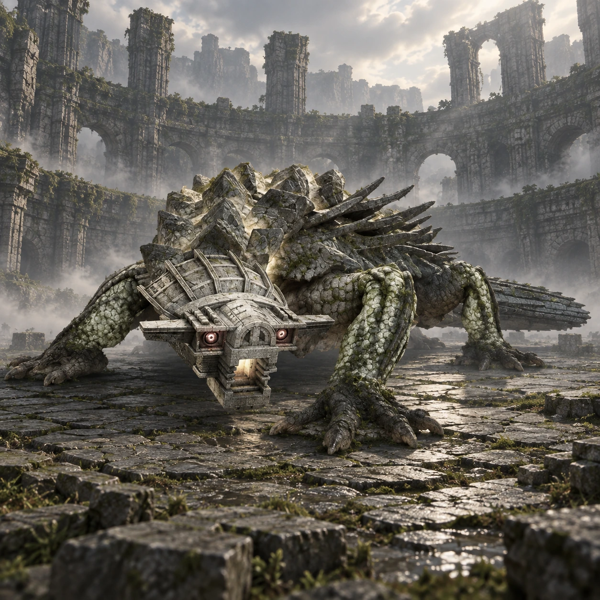

Dois nomes, duas origens
“Yamori_B” é um nome de desenvolvimento. “Kuromori” é o nome popular entre os fãs, não um nome próprio apresentado durante o jogo.

Colosso 08 · Terras Proibidas
Uma sombra percorre as paredes.
Kuromori ocupa o fundo de uma arena cercada por galerias. Seu corpo baixo e sua agilidade fazem o perigo circular tanto pelo chão quanto pelas paredes.
Conheça o gigante01 / O gigante
O perfil lembra uma grande lagartixa, com cauda comprida e patas abertas para os lados. Placas rígidas cobrem o dorso e dão ao corpo uma aparência de armadura.
Kuromori sobe pelas superfícies verticais da arena e lança ataques que tornam perigoso permanecer parado. Aqui, distância e altura são tão importantes quanto o tamanho do adversário.
*Altura e comprimento seguem as estimativas reunidas no Arqade, convertidas de pés para metros e arredondadas. Os valores variam entre fontes e escalas; são referências aproximadas, não medidas oficiais confirmadas.
02 / O caminho
Siga para o sul do santuário e tome a passagem que se abre a leste entre as rochas. Atravesse a gruta até a região do pequeno lago.
Entre no templo e percorra seus corredores. As escadas levam às galerias de uma construção circular, com o colosso no pátio inferior.
Abrir mapa das Terras Proibidas03 / Um olhar mais atento
“Yamori_B” é um nome de desenvolvimento. “Kuromori” é o nome popular entre os fãs, não um nome próprio apresentado durante o jogo.
A luta conecta o pátio às galerias superiores. Observar as aberturas entre os níveis ajuda a entender o espaço.
Enquanto Wander costuma subir nos colossos, Kuromori também escala o cenário, mudando continuamente o ângulo do encontro.
04 / O encontro
Algumas pistas para começar, deixando a descoberta da luta com você.
Dicas gerais para o modo Normal. A ficha não detalha todos os pontos vitais nem o desfecho do confronto.
Ficha baseada em registros da comunidade e guias de jogo. A arte é uma interpretação visual, não uma captura do jogo.